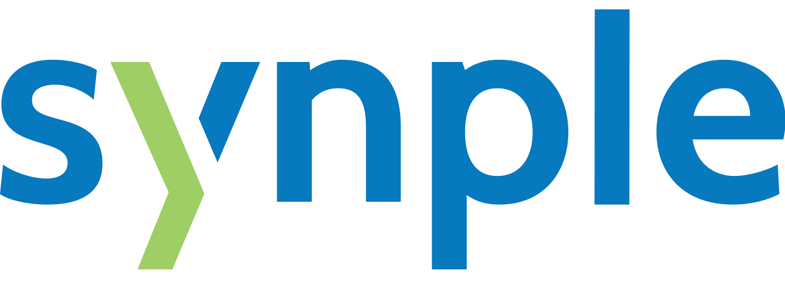
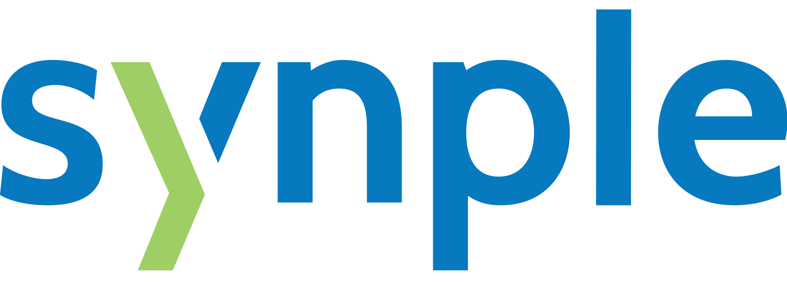

About DCD18
The Annual International Gathering of Clojure Enthusiasts and Practitioners in the Netherlands!
When?
Dutch Clojure Days happened on
Saturday, April 21st 2018, 8:30 AM – 5:30 PM CET.Agenda
8:30 9:15 | Reception | |
9:15 9:30 | Opening | #DCD18 team |
9:30 10:15 | Embrace the JVM | Alexander Yakushev |
10:25 11:10 | Online statistical analysis using transducers and sketch algorithms | Simon Belak |
11:20 12:05 | Practical Generative Testing Patterns | Srihari Sriraman |
12:05 13:20 | Lunch | |
13:20 14:05 | Implementing Graph API's with Clojure | Wilker Lúcio |
| Lightning Talks | ||
14:15 14:30 | Easier REPL-based debugging with scope-capture | Valentin Waeselynck |
14:30 14:45 | Stay agile with clojure.spec | Dr Roland Kay |
14:45 15:00 | Writing an asynchronous MQTT broker in Clojure (and a bit of Java) | Thomas van der Veen |
15:00 15:15 | REPtiLe - exercise your lizard brain and share REPLs in a cold-blooded browser | Ray McDermott |
15:15 15:45 | Coffee break | |
15:45 16:30 | No EC2 instances were harmed during this deployment | Josh Glover |
16:40 17:25 | How we test at Nubank | Phillip Mates |
17:35 18:20 | 5 years of Clojure: building better infrastructure with parentheses | Pierre-Yves Ritschard |
18:20 18:30 | Closing | #DCD18 team |
18:30 21:30 | Networking/Drinks | |
19:00 19:30 | extemporay - REPL driven comedy | Ray McDermott |
Sponsors
DCD is a free event that is made possible thanks to our amazing sponsors and volunteers.
Platinum sponsors

 

Regular Sponsors

Speakers
Alexander Yakushev
Embrace the JVM

Online statistical analysis using transducers and sketch algorithms
Srihari Sriraman
Practical Generative Testing Patterns
Wilker Lúcio
Implementing Graph API's with Clojure

lightning talkEasier REPL-based debugging with scope-capture
Dr Roland Kay
lightning talkStay agile with clojure.spec
Thomas van der Veen
lightning talkWriting an asynchronous MQTT broker in Clojure (and a bit of Java)

lightning talkREPtiLe - exercise your lizard brain and share REPLs in a cold-blooded browser
Josh Glover
No EC2 instances were harmed during this deployment
Phillip Mates
How we test at Nubank
Pierre-Yves Ritschard
5 years of Clojure: building better infrastructure with parentheses
lightning talkextemporay - REPL driven comedy
Code of Conduct
All attendees, speakers, sponsors and volunteers at our conference are required to agree with the following code of conduct. Organisers will enforce this code throughout the event. We expect cooperation from all participants to help ensure a safe environment for everybody.
Need Help?
You can always reach out to us at events@clojuredays.org or on twitter.
The Quick Version
Our conference is dedicated to providing a harassment-free conference experience for everyone, regardless of gender, gender identity and expression, age, sexual orientation, disability, physical appearance, body size, race, ethnicity, religion (or lack thereof), or technology choices. We do not tolerate harassment of conference participants in any form. Sexual language and imagery is not appropriate for any conference venue, including talks, workshops, parties, Twitter and other online media. Conference participants violating these rules may be sanctioned or expelled from the conference without a refund at the discretion of the conference organisers.
The Less Quick Version
Harassment includes offensive verbal comments related to gender, gender identity and expression, age, sexual orientation, disability, physical appearance, body size, race, ethnicity, religion, technology choices, sexual images in public spaces, deliberate intimidation, stalking, following, harassing photography or recording, sustained disruption of talks or other events, inappropriate physical contact, and unwelcome sexual attention.
Participants asked to stop any harassing behavior are expected to comply immediately.
Sponsors are also subject to the anti-harassment policy. In particular, sponsors should not use sexualised images, activities, or other material. Booth staff (including volunteers) should not use sexualised clothing/uniforms/costumes, or otherwise create a sexualised environment.
If a participant engages in harassing behavior, the conference organisers may take any action they deem appropriate, including warning the offender or expulsion from the conference with no refund.
If you are being harassed, notice that someone else is being harassed, or have any other concerns, please contact a member of conference staff immediately. Conference staff can be identified as they'll be wearing branded clothing and/or badges.
Conference staff will be happy to help participants contact hotel/venue security or local law enforcement, provide escorts, or otherwise assist those experiencing harassment to feel safe for the duration of the conference. We value your attendance.
We expect participants to follow these rules at conference and workshop venues and conference-related social events.
Where?
Dutch Clojure Days took place at the wonderful TQ, in the heart of Amsterdam (Singel 542, 1017 AZ Amsterdam).